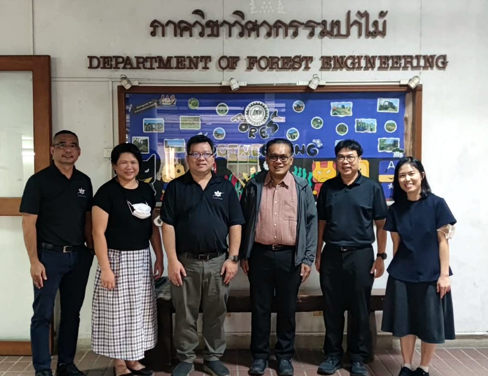

AIEP คุยถึงคณะที่ 6 แล้ว เพราะอนาคตที่ดีกว่าต้องมีคนเริ่มมองเห็นก่อน
{kind=link}

บทความนี้สั้นมาก แต่มีความหมายเชิงสัญลักษณ์สูง เพราะมันบันทึกช่วงเวลาที่ AIEP เดินมาถึงการพูดคุยกับคณะที่ 6 แล้ว ทั้งที่จุดเริ่มต้นของแนวคิดนี้เคยถูกตั้งคำถามว่า จะขยายไปทั้งมหาวิทยาลัยได้จริงหรือไม่
น้ำหนักของโพสต์จึงไม่ได้อยู่ที่จำนวนคณะที่คุยได้เท่านั้น แต่อยู่ที่การยืนยันว่า การเปลี่ยนแปลงในมหาวิทยาลัยไม่ได้เริ่มจากวันที่ทุกอย่างพร้อม แต่เริ่มจากวันที่ยังมีคนเชื่อว่า อนาคตที่ดีกว่า ควรถูกมองเห็นก่อน แล้วค่อยสร้างเงื่อนไขให้มันเกิดขึ้นจริง
ประโยคเปิดของโพสต์ย้อนกลับไปยังคำถามจากผู้ใหญ่ที่ผู้เขียนเคารพว่า ทำไมไม่ทำ AIEP ให้ทั้งมหาวิทยาลัยไปเลย คำถามนี้สำคัญเพราะมันสะท้อนทั้ง ความคาดหวัง และ ความสงสัย ในเวลาเดียวกัน ว่าสิ่งที่ดูใหญ่เกินจริงนั้นจะขับเคลื่อนได้จริงหรือไม่
AIEP ไม่ได้ขยับเพราะทุกอย่างพร้อม แต่ขยับเพราะยังมีคนเชื่อในอนาคตที่ดีกว่า
หัวใจของโพสต์นี้อยู่ที่การย้ำว่า สิ่งที่เกิดขึ้นไม่ได้มาจากความพร้อมสมบูรณ์ของระบบ แต่มาจากการที่ยังมีคนยอมมองเห็นอนาคตที่ดีกว่าก่อน แล้วค่อยเดินไปทีละขั้น มุมนี้สำคัญมาก เพราะสะท้อนธรรมชาติจริงของการเปลี่ยนแปลงเชิงนโยบายในมหาวิทยาลัย ซึ่งแทบไม่เคยเริ่มจากจังหวะที่ทุกอย่างลงตัว
ดังนั้น ความคืบหน้าที่ไปถึงคณะที่ 6 จึงไม่ใช่เพียงตัวเลข แต่เป็นสัญญาณว่าแนวคิดนี้เริ่มสร้าง แรงยอมรับร่วม ข้ามหน่วยงานได้มากขึ้น และกำลังค่อย ๆ เปลี่ยนจากคำถามเชิงนามธรรม ไปสู่การสนทนาที่มีตัวแสดงจริงในระดับคณะและภาควิชา
การเปลี่ยนแปลงในมหาวิทยาลัยต้องอาศัยทั้งความหวังและความอดทน
ตอนท้ายของโพสต์ยังซื่อตรงมาก ผู้เขียนไม่ได้ประกาศชัยชนะ แต่ยอมรับว่า ตอนนี้เพียงแค่เริ่มต้นได้แล้ว ส่วนจะจบสวยแค่ไหนยังต้องคอยดูกันต่อไป นี่ทำให้โพสต์ชิ้นนี้มีน้ำหนัก เพราะมันไม่ romanticize การเปลี่ยนแปลง แต่ยอมรับว่าเส้นทางจริงต้องอาศัยทั้ง ความคาดหวัง และ ความอดทน
ข้อสรุปจึงเรียบง่ายแต่คมมาก: หากเราไม่มีมุมมองที่ดีต่อปัญหา ความคาดหวังถึงสิ่งดี ๆ ก็จะไปไม่ถึงไหน และถ้าจะสร้างอนาคตใหม่ให้มหาวิทยาลัย เราก็ต้องเริ่มจากการมีคนที่ยังพร้อมมองเห็นมันก่อน